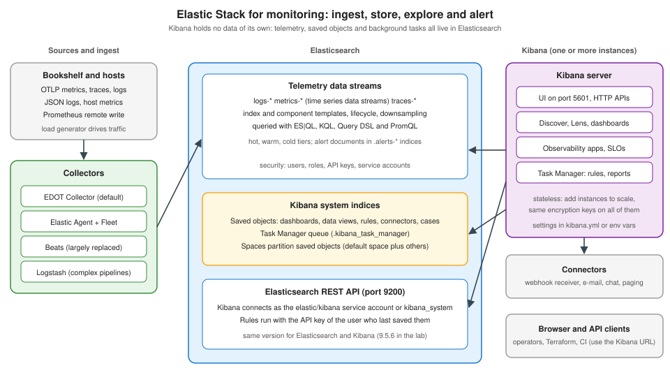

Kibana: Architecture & the Elastic Stack
|
This content was generated with the assistance of AI and should be verified against the official documentation before being relied on in production. |
Checked on 2026-11-09 against Kibana 9.5.x.
To do this by hand, follow First Steps in Kibana.
Anyone who has run Grafana will look for the equivalent of "the server that queries other systems". In the Elastic Stack the picture is different: the data store, the query engine, the security layer and the alert history are all Elasticsearch, and Kibana is a web server in front of it that keeps almost nothing of its own. Knowing which component owns which piece explains most operational questions: why Kibana must have exactly the Elasticsearch version it was released with, why two Kibana instances can share one set of dashboards, why a rule keeps running when nobody has the UI open, and why losing one system index loses every scheduled alert. This page walks through the pieces; Installation & Configuration runs them and Spaces, Roles & Privileges secures them.

The components
The official overview lists the pieces of the Elastic Stack and groups them into store, ingest and consume. For monitoring they play these roles:
| Component | Role |
|---|---|
Elasticsearch |
The distributed search and analytics engine and data store. It runs as a cluster of nodes, indices are split into shards, and nearly everything can be managed through REST APIs. Telemetry is stored in data streams (Data Streams, TSDS & Lifecycle); users, roles and API keys live here too; and so does the state that Kibana needs. |
Kibana |
The user interface for Elastic solutions and Serverless projects, and the tool that manages other Stack components. It is where you explore data in Discover, build charts with Lens, assemble dashboards, configure alerts, track incidents with cases, manage pipelines, data streams and API keys, and send requests to Elasticsearch through Dev Tools Console. |
Elastic Agent and Fleet |
One agent per host that collects logs, metrics and other data through policies and integrations; Fleet manages agents centrally (policies, monitoring, upgrades). |
EDOT (Elastic Distributions of OpenTelemetry) |
Elastic’s distributions of OpenTelemetry components, built to send native OTel traces, metrics and logs to Elastic Observability. The EDOT Collector is built into Elastic Agent from 9.5. |
Beats |
Open source data shippers installed on servers. The overview says Elastic Agent has replaced them for most use cases. |
Logstash |
A data collection engine with real-time pipelining, using input, filter and output plugins to normalize data and send it on. |
APM |
Application performance monitoring: traces and service metrics, with native OpenTelemetry support. |
Source: The Elastic Stack (anchors #stack-components-elasticsearch,
#stack-components-kibana, #stack-components-agent and #stack-components-logstash). The EDOT Collector built into Elastic Agent
since 9.5 is from Elastic Distributions of OpenTelemetry.
Choosing between these ingest paths for Bookshelf is the subject of Ingesting Monitoring Data; the general ideas of agents, collectors and pipelines are in Telemetry Collection Pipelines. What matters here is the direction of the arrows: every collector writes to Elasticsearch, and nothing writes to Kibana. For the cluster itself (nodes, shards, mappings, snapshots) see the Elasticsearch section, in particular administration, monitoring and snapshots.
Elasticsearch: where everything lives
Two network interfaces matter when you plan a deployment. The REST API (port 9200 and up, setting http.port) is what Kibana,
Logstash and your own clients use, so Kibana and the REST interface must be reachable by external users. The transport interface
(port 9300 and up, setting transport.port) is used only between Elasticsearch nodes. The installation page also gives the order in
which a self-managed stack is installed: Elasticsearch first, then Kibana, then Logstash, then Elastic Agent or Beats, then APM.
Installing in that order makes sure each product’s dependencies exist before it starts.
Source: Install Kibana (sections "Start-up" and "Installation order").
For monitoring, Elasticsearch holds four kinds of data that you should keep apart in your head:
-
Telemetry: the logs, metrics and traces of Bookshelf, in data streams such as
logs-*,metrics-*andtraces-*. -
Alert documents: when a rule finds a problem, Kibana writes an alert document to an
.alerts-*index. The privileges page names read access to.alerts-*as what a user needs to see alerts from Discover or dashboards. -
Security: users, roles, API keys and service accounts.
-
Kibana’s own state: saved objects and the Task Manager queue, described next.
Source: Alerting setup (section "Security", anchor
#required-privileges).
Kibana: a server with no data of its own
Kibana is a Node.js server that serves the UI on port 5601 (server.port) and exposes HTTP APIs. The packages include the Node.js
binaries they need; running Kibana with a separately maintained Node.js is not supported. Its relationship to Elasticsearch is strict:
-
Use the same version for Kibana and Elasticsearch (Kibana 9.5.6 with Elasticsearch 9.5.6).
-
Do not mix major versions (Kibana 9 with Elasticsearch 8), and do not run a Kibana minor version newer than the Elasticsearch minor version.
-
Elasticsearch may be one minor version ahead of Kibana temporarily while you upgrade, and Kibana logs a warning at startup.
-
Patch-level differences are generally supported, but matching patch versions is recommended.
Source: Install Kibana (section "Supported versions").
The things that look like "Kibana’s data" are saved objects: dashboards, visualizations, data views, maps, Discover sessions, Canvas
workpads, and also rules, connectors and cases. They are stored in Elasticsearch system indices (names starting with .kibana) and
managed on the Saved Objects page, which needs the Saved Objects Management privilege. Export produces an NDJSON file that includes
related child objects, and import reads one back; exports cannot be imported into older Kibana versions. Because the state is in
Elasticsearch, running more Kibana instances behind a load balancer shows every user the same dashboards, and replacing a Kibana
container loses nothing as long as the configuration (including encryption keys, see the installation page) is the same. What stays on
the Kibana host is only configuration: kibana.yml and the optional keystore file.
Source: Saved objects (sections "Export and import" and "Sharing to other spaces"); the sharing side is covered in Sharing, Reporting & Saved Objects.
Task Manager: what runs rules and reports
Kibana does not run rules in your browser session or in a separate scheduler service. It runs them in Task Manager, the part of every Kibana instance that executes persistent background tasks for Alerting, Actions and Reporting. Understanding its mechanics explains most "my alert is late" reports.
-
Where tasks live. Task state and scheduling are stored in Elasticsearch in the
.kibana_task_managerindex. Production deployments need at least one replica of this index, because losing it means losing all scheduled alerts and actions. -
How tasks are claimed. Each Kibana instance polls that index for overdue tasks every 500 milliseconds by default (
xpack.task_manager.poll_interval) and runs up to ten tasks at the same time. Instances share one queue, so adding instances adds capacity. -
What counts as work. For capacity planning, count each rule as a recurring task and each action as a non-recurring task, express the total as tasks per minute, and watch Task Manager health, because action volume is hard to predict.
-
Dedicated nodes. For large deployments, background tasks can run on dedicated Kibana nodes so that they do not compete with user traffic: set
node.roles: ["background_tasks"]inkibana.ymlon self-managed and ECK deployments. On Elastic Cloud Hosted and ECE, deployments with more than 8 GB of Kibana RAM are split into UI and background-task nodes automatically. -
Clocks. Synchronize clocks across all nodes (NTP) so that schedules trigger on time.
Each instance exposes its own health endpoint at /api/task_manager/_health. The response has Configuration, Workload, Runtime
and Capacity Estimation sections, each with a status of OK, Warning or Error and a timestamp. The endpoint returns the most recent
health checks, so an external monitoring tool can poll it regularly without adding load. On Elastic Cloud Hosted and ECE deployments that
use dedicated background-task nodes, the endpoint is served by a UI node and does not reflect task execution state.
Source: Kibana task management, Task Manager health monitoring and Alerting production considerations.
Two consequences for alerting design: alerting capacity is a property of the Kibana tier, not of Elasticsearch, and an overloaded Task Manager delays rules without producing an error in the rule itself. Scaling and its settings are in Alerting Setup, Security & Scaling; the rule engine itself is introduced in Alerting Overview.
Spaces: partitions inside one Kibana
A space organizes content and users inside one Kibana. Each space has its own saved objects, users see only the spaces their roles
grant, and a role can hold different privileges in different spaces. Kibana always has a default space that cannot be deleted. A space
is addressed by putting /s/<space> after the Kibana URL, for example /s/marketing/api/saved_objects/_find?type=dashboard; a request
without a space identifier goes to the default space. On the Stack, each space also chooses a solution view (Search, Observability,
Security or Classic) that controls its navigation. The details, including privileges, are on
Spaces, Roles & Privileges.
Source: Spaces (anchors #what-are-spaces, #default-space,
#solution-views and #url-and-api).
The Observability apps
On top of this platform the Observability solution gives monitoring-specific apps that are all built from the same pieces (data streams, saved objects, rules). The overview lists logs (Discover with ES|QL queries and prebuilt dashboards), metrics (from OpenTelemetry, Prometheus remote write or Elastic Agent integrations, queried with ES|QL or PromQL), infrastructure monitoring, APM and traces, synthetic monitoring, streams for log ingestion, AIOps, alerting, SLOs, and cases for incident tracking. The next pages in this subsection take them in turn: Infrastructure & Host Monitoring, APM & Synthetics and SLOs. The rest of Kibana’s analysis tools (Discover, dashboards, visualizations, reporting) are the "Explore and analyze" part of the documentation, which also covers alerting, cases and machine learning.
Source: Elastic Observability and Explore and analyze.
Comparing with the Grafana architecture
The Grafana equivalent of this page is Grafana Architecture and Ecosystem. The practical differences:
| Aspect | Grafana | Kibana |
|---|---|---|
Telemetry storage |
External back ends (Prometheus, Loki, Tempo) queried through data source plugins |
Elasticsearch only, queried directly |
Own state |
Database (SQLite by default, MySQL or PostgreSQL) |
Saved objects and Task Manager queue in Elasticsearch |
Rule execution |
Scheduler in the Grafana server |
Task Manager tasks claimed by any Kibana instance |
Access partitioning |
Organizations, folders and teams |
Spaces and roles |
What can go wrong
-
Version drift. Starting Kibana against an Elasticsearch of a different major version, or a newer minor version, fails or warns; keep both pinned to the same tag in Compose and in upgrade runbooks.
-
Unmonitored Task Manager. Rules appear to run but are late because the queue is long. Poll
/api/task_manager/_healthand alert onWarningorErrorstatuses (a later page shows this as a meta-alert). -
Missing replica of the task index. A single-copy
.kibana_task_managerindex that is lost takes every scheduled rule with it. -
Clock skew. Unsynchronized clocks make schedules fire at wrong times.
-
Treating spaces as security boundaries only by hiding features. Hiding features in a space is a usability setting; roles are what restrict access (see the spaces page).
Verify it in the lab
-
With the
kibanaprofile running,curl -s -u elastic:"$ELASTIC_PASSWORD" http://localhost:5601/api/task_manager/_healthreturns JSON; the rootstatusshould beOKand theworkloadsection lists task types such asalerting:*once rules exist. -
curl -s -u elastic:"$ELASTIC_PASSWORD" "http://localhost:9200/_cat/indices/.kibana*?v"lists Kibana’s system indices, including.kibana_task_manager. -
curl -s -u elastic:"$ELASTIC_PASSWORD" "http://localhost:5601/api/saved_objects/_find?type=dashboard&per_page=5"lists dashboards in the default space; adding/s/bookshelfbefore/apiqueries thebookshelfspace created on the spaces page. -
Compare
docker compose exec kibana bin/kibana --versionwith the Elasticsearch version incurl -s -u elastic:"$ELASTIC_PASSWORD" http://localhost:9200.
Reference: Task Manager health monitoring and Spaces (URL form).
In the books
Learning ELK Stack (Chhajed, Elasticsearch 1.5 and Kibana 4) describes the original pipeline in which Logstash feeds Elasticsearch and Kibana reads it, with Redis or Kafka as buffers; the three-stage idea survives, but Beats and Elastic Agent now ship data directly, EDOT is the default for OpenTelemetry, and Kibana now stores rules and runs them. Kibana 8.x: A Quick Start Guide to Data Analysis (Shah) introduces Kibana as the interface to Elasticsearch, spaces and saved objects at the 8.11 level, without solution views or Task Manager. Elasticsearch in Action (Konda, 2nd ed.) covers the cluster side and treats Kibana as secondary. Publisher pages are in the bibliography.